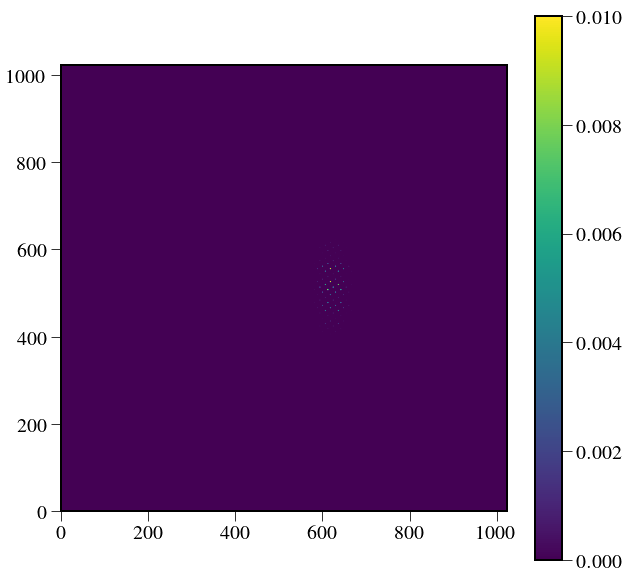
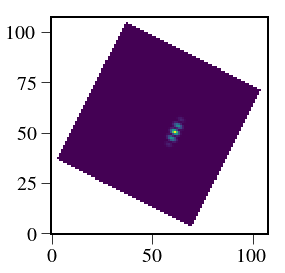

In [1]:
import numpy as np
import scipy as sp
import glob,os
%pylab inline --no-import-all
plt.rc('font', family='serif', serif='Times',size=15)
plt.rc('text', usetex=True)
plt.rc('xtick', labelsize=20)
plt.rc('xtick.major', size=10)
plt.rc('ytick.major', size=10)
plt.rc('ytick', labelsize=20)
plt.rc('axes', labelsize=20)
plt.rc('figure',titlesize=25)
plt.rcParams['image.origin'] = 'lower'
plt.rcParams['image.interpolation'] = 'nearest'
plt.rcParams['axes.linewidth'] = 2.
from astropy.io import fits
import astropy.units as u
import astropy.constants as c
import pandas as pd
import logging as log
from crispy.tools.initLogger import getLogger
log = getLogger('main')
from crispy.tools.image import Image
os.chdir('/Users/mrizzo/IFS/crispy/crispy/WFIRST/')
from params import Params
par = Params()
par.hdr
offaxis_psf_filename='/Users/mrizzo/IFS/OS5/offaxis/spc_offaxis_psf.fits'
folder = '/Users/mrizzo/IFS/Extraction/'
try:
os.makedirs(folder)
except OSError:
log.error("Couldn't create master folder")
pass
from crispy.tools.postprocessing import process_offaxis
import glob
filelist = glob.glob('/Users/mrizzo/IFS/OS5/with_lowfc/*.fits')
reffiles = filelist[:30]
fileshape = fits.open(reffiles[0])[0].data.shape
BW=0.18
lamc=660
lamlist = lamc*np.linspace(1.-BW/2.,1.+BW/2.,fileshape[0])*u.nm
Populating the interactive namespace from numpy and matplotlib
main - ERROR - Couldn't create master folder
In [2]:
process_offaxis(par,
offaxis_psf_filename=offaxis_psf_filename,
fileshape=fileshape,
lamlist=lamlist,lamc=lamc,
outdir_average=folder,
Nave=1,inttime=1,Nreads=1,
filename=par.codeRoot+'/Inputs/'+'Jupiter_1x_5AU_90deg.dat',
planet_radius = 1.27, # in R_jup
planet_AU = 3.6,planet_dist_pc=14.1,
albedo=0.28,
target_star_T=5887*u.K, target_star_Vmag=5.03,
ref_star_T=9377*u.K, ref_star_Vmag=2.37,
tel_pupil_area=3.650265060424805*u.m**2, order=3,
useQE=False,polychromeOut=True)
crispy - INFO - Recentering off-axis cube
crispy - INFO - Read data from HDU 0 of /Users/mrizzo/IFS/OS5/offaxis/spc_offaxis_psf.fits
crispy - INFO - The number of input pixels per lenslet is 5.000000
crispy - INFO - Writing data to /Users/mrizzo/IFS/Extraction//offaxiscube.fits
crispy - INFO - Constructing off-axis cube at planet separation: 4.44 lam/D (0.26 arcsec, 8.89 lenslets)
crispy - INFO - Writing data to /Users/mrizzo/IFS/Extraction//offaxiscube_shifted.fits
crispy - INFO - The number of input pixels per lenslet is 5.000000
crispy - INFO - Using PSFlet gaussian approximation
crispy - WARNING - Assuming slices are evenly spread in wavelengths
crispy - INFO - Creating Gaussian PSFLet templates
crispy - INFO - Writing data to ..//SimResults/detectorFramepoly.fits
crispy - INFO - Writing data to ..//SimResults/detectorFrame.fits
crispy - INFO - Done.
crispy - INFO - Performance: 43 seconds total
crispy - INFO - Writing data to /Users/mrizzo/IFS/Extraction//offaxis_star.fits
crispy - INFO - Writing data to /Users/mrizzo/IFS/Extraction//offaxis_star_detector.fits
crispy - INFO - Read data from HDU 1 of /Users/mrizzo/IFS/Extraction//offaxis_star_detector.fits
crispy - INFO - Reduced cube will have 19 wavelength bins
crispy - INFO - Elapsed time: 1.649038s
crispy - INFO - Writing data to /Users/mrizzo/IFS/Extraction//offaxis_star_red_optext.fits
crispy - INFO - The number of input pixels per lenslet is 5.000000
crispy - INFO - Using PSFlet gaussian approximation
crispy - WARNING - Assuming slices are evenly spread in wavelengths
crispy - INFO - Creating Gaussian PSFLet templates
crispy - INFO - Writing data to ..//SimResults/detectorFramepoly.fits
crispy - INFO - Writing data to ..//SimResults/detectorFrame.fits
crispy - INFO - Done.
crispy - INFO - Performance: 49 seconds total
crispy - INFO - Writing data to /Users/mrizzo/IFS/Extraction//offaxis_ref_star.fits
crispy - INFO - Writing data to /Users/mrizzo/IFS/Extraction//offaxis_ref_star_detector.fits
crispy - INFO - Read data from HDU 1 of /Users/mrizzo/IFS/Extraction//offaxis_ref_star_detector.fits
crispy - INFO - Reduced cube will have 19 wavelength bins
crispy - INFO - Elapsed time: 1.855059s
crispy - INFO - Writing data to /Users/mrizzo/IFS/Extraction//offaxis_ref_star_red_optext.fits
crispy - INFO - The number of input pixels per lenslet is 5.000000
crispy - INFO - Using PSFlet gaussian approximation
crispy - WARNING - Assuming slices are evenly spread in wavelengths
crispy - INFO - Creating Gaussian PSFLet templates
crispy - INFO - Writing data to ..//SimResults/detectorFramepoly.fits
crispy - INFO - Done.
crispy - INFO - Performance: 46 seconds total
crispy - INFO - Writing data to /Users/mrizzo/IFS/Extraction//offaxis_planet.fits
crispy - INFO - Writing data to /Users/mrizzo/IFS/Extraction//offaxis_planet_detector.fits
crispy - INFO - Read data from HDU 1 of /Users/mrizzo/IFS/Extraction//offaxis_planet_detector.fits
crispy - INFO - Reduced cube will have 19 wavelength bins
crispy - INFO - Elapsed time: 1.710959s
crispy - INFO - Writing data to /Users/mrizzo/IFS/Extraction//offaxis_planet_red_optext.fits
crispy - INFO - Reduced cube will have 19 wavelength bins
crispy - INFO - The number of input pixels per lenslet is 5.000000
crispy - INFO - Using PSFlet gaussian approximation
crispy - WARNING - Assuming slices are evenly spread in wavelengths
crispy - INFO - Creating Gaussian PSFLet templates
crispy - INFO - Writing data to ..//SimResults/detectorFramepoly.fits
crispy - INFO - Done.
crispy - INFO - Performance: 20 seconds total
Out[2]:
<crispy.tools.image.Image instance at 0x10491d5a8>
In [3]:
PSF_cube = fits.open(folder+'/PSF_cube.fits')[1].data
PSF_cube_cut = PSF_cube.copy()
PSF = np.zeros_like(PSF_cube_cut)
for i in range(PSF.shape[0]):
PSF[i] = PSF_cube_cut[i]/np.sum(PSF_cube_cut[i])
print np.amax(PSF[0])
plt.figure(figsize=(10,10))
plt.imshow(PSF[0],vmax=0.01)
plt.colorbar()
0.0193086
Out[3]:
<matplotlib.colorbar.Colorbar at 0x1064dbc90>

In [5]:
img = fits.open(folder+'offaxis_planet_detector.fits')[1].data
imgstar = fits.open(folder+'offaxis_star_detector.fits')[1].data
plt.figure(figsize=(10,10))
plt.imshow(img)
plt.colorbar()
Out[5]:
<matplotlib.colorbar.Colorbar at 0x1c257ba0d0>

In [10]:
from crispy.tools.reduction import RL,calculateWaveList
psflets_flat = np.reshape(PSF, (PSF.shape[0], -1))
spec = RL(img,psflets_flat,niter=100)[0]
star = RL(imgstar,psflets_flat,niter=100)[0]
In [11]:
plt.plot(spec)
Out[11]:
[<matplotlib.lines.Line2D at 0x1c12a43dd0>]

In [11]:
plt.plot(lamlist,spec/star)
from crispy.tools.inputScene import calc_contrast
contrast=calc_contrast(wavelist=lamlist.value,distance=3.6,radius=1.27,filename=par.codeRoot+'/Inputs/'+'Jupiter_1x_5AU_90deg.dat',albedo=0.28)
plt.scatter(lamlist,contrast,color='orange')
Out[11]:
<matplotlib.collections.PathCollection at 0x11100b550>

In [9]:
from crispy.IFS import reduceIFSMap
niter=1
imgRES = reduceIFSMap(par,img,method='lstsq_conv',smoothbad = False,fitbkgnd=False,niter=niter)
imgStar = reduceIFSMap(par,imgstar,method='lstsq_conv',smoothbad = False,fitbkgnd=False,niter=niter)
crispy - INFO - Reduced cube will have 19 wavelength bins
crispy - INFO - Writing data to ..//SimResults/20180119-170600_red_lstsq_conv_resid.fits
crispy - INFO - Writing data to ..//SimResults/20180119-170600_red_lstsq_conv_model.fits
crispy - INFO - Elapsed time: 11.861826s
crispy - INFO - Reduced cube will have 19 wavelength bins
crispy - INFO - Writing data to ..//SimResults/20180119-170612_red_lstsq_conv_resid.fits
crispy - INFO - Writing data to ..//SimResults/20180119-170612_red_lstsq_conv_model.fits
crispy - INFO - Elapsed time: 11.517492s
In [10]:
plt.imshow(imgRES.data[8])
imgRES.write(folder+'planet_cube.fits')
imgStar.write(folder+'star_cube.fits')
crispy - INFO - Writing data to /Users/mrizzo/IFS/Extraction/planet_cube.fits
crispy - INFO - Writing data to /Users/mrizzo/IFS/Extraction/star_cube.fits

In [11]:
from crispy.tools.postprocessing import construct_mflib,convolved_mf
from crispy.tools.imgtools import bowtie
ydim,xdim = imgRES.data[0].shape
IWA=3
OWA=9
mask,scratch = bowtie(imgRES.data[0],ydim//2-1,xdim//2,openingAngle=65,
clocking=-par.philens*180./np.pi,
IWApix=IWA*lamc/par.lenslet_wav/par.lenslet_sampling,
OWApix=OWA*lamc/par.lenslet_wav/par.lenslet_sampling,
export=None,twomasks=False)
construct_mflib(par,planet_cube=folder+'planet_cube.fits',
threshold=0.2,
lamc=lamc,
BW=BW,
outdir=folder,
mask=mask,
trim=30,
outname = 'mflib.fits.gz',
order=3)
mflib = folder+'mflib.fits.gz'
crispy - INFO - Read data from HDU 1 of /Users/mrizzo/IFS/Extraction/planet_cube.fits
crispy - INFO - Read inverse variance from HDU 2 of /Users/mrizzo/IFS/Extraction/planet_cube.fits
crispy - INFO - Coordinates of the planet in lenslets: 61.00, 50.00
In [12]:
convolved = convolved_mf(imgRES.data,mflib)
convolvedstar = convolved_mf(imgStar.data,mflib)
yp,xp = np.unravel_index(np.nanargmax(convolved[convolved.shape[0]//2]), convolved[convolved.shape[0]//2].shape)
log.info("Coordinates of the planet in lenslets: %.2f, %.2f" %(xp,yp))
signal = convolved[:,yp,xp]
star = convolvedstar[:,yp,xp]
main - INFO - Coordinates of the planet in lenslets: 61.00, 50.00
In [14]:
from crispy.tools.reduction import calculateWaveList
lam_midpts,lam_endpts = calculateWaveList(par)
from crispy.tools.inputScene import calc_contrast
contrast=calc_contrast(wavelist=lamlist.value,distance=3.6,radius=1.27,filename=par.codeRoot+'/Inputs/'+'Jupiter_1x_5AU_90deg.dat',albedo=0.28)
plt.plot(lam_midpts,signal/star)
plt.plot(lamlist.value,contrast)
crispy - INFO - Reduced cube will have 19 wavelength bins
Out[14]:
[<matplotlib.lines.Line2D at 0x1c24b8d450>]

In [15]:
par.npixperdlam = 2.0
imgOptExt = reduceIFSMap(par,img,method='optext',smoothbad = False,fitbkgnd=False,niter=niter)
ydim,xdim = imgOptExt.data[0].shape
IWA=3
OWA=9
mask,scratch = bowtie(imgOptExt.data[0],ydim//2-1,xdim//2,openingAngle=65,
clocking=-par.philens*180./np.pi,
IWApix=IWA*lamc/par.lenslet_wav/par.lenslet_sampling,
OWApix=OWA*lamc/par.lenslet_wav/par.lenslet_sampling,
export=None,twomasks=False)
imgOptExt.write(folder+'planet_cube_optext.fits')
construct_mflib(par,planet_cube=folder+'planet_cube_optext.fits',
threshold=0.2,
lamc=lamc,
BW=BW,
outdir=folder,
mask=mask,
trim=30,
outname = 'mflib_optext.fits.gz',
order=3)
mflibOptExt = folder+'mflib_optext.fits.gz'
imgOptExt = reduceIFSMap(par,img,method='optext',smoothbad = False,fitbkgnd=False,niter=niter)
imgStarOptExt = reduceIFSMap(par,imgstar,method='optext',smoothbad = False,fitbkgnd=False,niter=niter)
convolvedOptext = convolved_mf(imgOptExt.data,mflibOptExt)
convolvedStarOptext = convolved_mf(imgStarOptExt.data,mflibOptExt)
signalOptext = convolvedOptext[:,yp,xp]
signalStarOptext = convolvedStarOptext[:,yp,xp]
crispy - INFO - Reduced cube will have 19 wavelength bins
crispy - INFO - Elapsed time: 1.884929s
crispy - INFO - Writing data to /Users/mrizzo/IFS/Extraction/planet_cube_optext.fits
crispy - INFO - Read data from HDU 1 of /Users/mrizzo/IFS/Extraction/planet_cube_optext.fits
crispy - INFO - Read inverse variance from HDU 2 of /Users/mrizzo/IFS/Extraction/planet_cube_optext.fits
crispy - INFO - Coordinates of the planet in lenslets: 61.00, 50.00
crispy - INFO - Reduced cube will have 19 wavelength bins
crispy - INFO - Elapsed time: 1.540007s
crispy - INFO - Reduced cube will have 19 wavelength bins
crispy - INFO - Elapsed time: 1.519300s
In [16]:
lam_midpts,lam_endpts = calculateWaveList(par,method='lstsq')
plt.plot(lam_midpts,signal/star)
lam_midpts,lam_endpts = calculateWaveList(par,method='optext')
plt.plot(lam_midpts,signalOptext/signalStarOptext,'-o')
plt.plot(lamlist.value,contrast)
crispy - INFO - Reduced cube will have 19 wavelength bins
crispy - INFO - Reduced cube will have 19 wavelength bins
Out[16]:
[<matplotlib.lines.Line2D at 0x1c266a7990>]

In [17]:
plt.plot(signal)
Out[17]:
[<matplotlib.lines.Line2D at 0x1c2474d2d0>]

In [18]:
def SNR_microspectra(par,Nelec,img,Ntrials,niter):
S = np.zeros((19,Ntrials))
# construct appropriate image
imgsum = np.sum(img)
for i in range(Ntrials):
poissonImage = np.random.poisson(img*Nelec/imgsum).astype(float)
imgout = reduceIFSMap(par,poissonImage,method='lstsq_conv',smoothbad = False,fitbkgnd=False,niter=niter)
convolved = convolved_mf(imgout.data,mflib)
yp,xp = np.unravel_index(np.nanargmax(convolved[convolved.shape[0]//2]), convolved[convolved.shape[0]//2].shape)
S[:,i] = convolved[:,yp,xp]
plt.figure(figsize=(10,10))
plt.imshow(poissonImage[400:620,570:690])
plt.colorbar()
return S
In [19]:
Nelec = 10000
Ntrials = 100
niter = 1
S = SNR_microspectra(par,Nelec,img,Ntrials,niter)
crispy - INFO - Reduced cube will have 19 wavelength bins
crispy - INFO - Writing data to ..//SimResults/20180119-170738_red_lstsq_conv_resid.fits
crispy - INFO - Writing data to ..//SimResults/20180119-170738_red_lstsq_conv_model.fits
crispy - INFO - Elapsed time: 11.878977s
crispy - INFO - Reduced cube will have 19 wavelength bins
crispy - INFO - Writing data to ..//SimResults/20180119-170753_red_lstsq_conv_resid.fits
crispy - INFO - Writing data to ..//SimResults/20180119-170753_red_lstsq_conv_model.fits
crispy - INFO - Elapsed time: 11.297049s
crispy - INFO - Reduced cube will have 19 wavelength bins
crispy - INFO - Writing data to ..//SimResults/20180119-170808_red_lstsq_conv_resid.fits
crispy - INFO - Writing data to ..//SimResults/20180119-170808_red_lstsq_conv_model.fits
crispy - INFO - Elapsed time: 11.364696s
crispy - INFO - Reduced cube will have 19 wavelength bins
crispy - INFO - Writing data to ..//SimResults/20180119-170822_red_lstsq_conv_resid.fits
crispy - INFO - Writing data to ..//SimResults/20180119-170822_red_lstsq_conv_model.fits
crispy - INFO - Elapsed time: 11.367578s
crispy - INFO - Reduced cube will have 19 wavelength bins
crispy - INFO - Writing data to ..//SimResults/20180119-170837_red_lstsq_conv_resid.fits
crispy - INFO - Writing data to ..//SimResults/20180119-170837_red_lstsq_conv_model.fits
crispy - INFO - Elapsed time: 11.364418s
crispy - INFO - Reduced cube will have 19 wavelength bins
crispy - INFO - Writing data to ..//SimResults/20180119-170851_red_lstsq_conv_resid.fits
crispy - INFO - Writing data to ..//SimResults/20180119-170851_red_lstsq_conv_model.fits
crispy - INFO - Elapsed time: 11.383334s
crispy - INFO - Reduced cube will have 19 wavelength bins
crispy - INFO - Writing data to ..//SimResults/20180119-170905_red_lstsq_conv_resid.fits
crispy - INFO - Writing data to ..//SimResults/20180119-170905_red_lstsq_conv_model.fits
crispy - INFO - Elapsed time: 11.352316s
crispy - INFO - Reduced cube will have 19 wavelength bins
crispy - INFO - Writing data to ..//SimResults/20180119-170920_red_lstsq_conv_resid.fits
crispy - INFO - Writing data to ..//SimResults/20180119-170920_red_lstsq_conv_model.fits
crispy - INFO - Elapsed time: 11.299649s
crispy - INFO - Reduced cube will have 19 wavelength bins
crispy - INFO - Writing data to ..//SimResults/20180119-170934_red_lstsq_conv_resid.fits
crispy - INFO - Writing data to ..//SimResults/20180119-170934_red_lstsq_conv_model.fits
crispy - INFO - Elapsed time: 11.463082s
crispy - INFO - Reduced cube will have 19 wavelength bins
crispy - INFO - Writing data to ..//SimResults/20180119-170948_red_lstsq_conv_resid.fits
crispy - INFO - Writing data to ..//SimResults/20180119-170948_red_lstsq_conv_model.fits
crispy - INFO - Elapsed time: 11.310773s
crispy - INFO - Reduced cube will have 19 wavelength bins
crispy - INFO - Writing data to ..//SimResults/20180119-171003_red_lstsq_conv_resid.fits
crispy - INFO - Writing data to ..//SimResults/20180119-171003_red_lstsq_conv_model.fits
crispy - INFO - Elapsed time: 11.380134s
crispy - INFO - Reduced cube will have 19 wavelength bins
crispy - INFO - Writing data to ..//SimResults/20180119-171017_red_lstsq_conv_resid.fits
crispy - INFO - Writing data to ..//SimResults/20180119-171017_red_lstsq_conv_model.fits
crispy - INFO - Elapsed time: 11.454055s
crispy - INFO - Reduced cube will have 19 wavelength bins
crispy - INFO - Writing data to ..//SimResults/20180119-171032_red_lstsq_conv_resid.fits
crispy - INFO - Writing data to ..//SimResults/20180119-171032_red_lstsq_conv_model.fits
crispy - INFO - Elapsed time: 11.335533s
crispy - INFO - Reduced cube will have 19 wavelength bins
crispy - INFO - Writing data to ..//SimResults/20180119-171046_red_lstsq_conv_resid.fits
crispy - INFO - Writing data to ..//SimResults/20180119-171046_red_lstsq_conv_model.fits
crispy - INFO - Elapsed time: 11.465420s
crispy - INFO - Reduced cube will have 19 wavelength bins
crispy - INFO - Writing data to ..//SimResults/20180119-171101_red_lstsq_conv_resid.fits
crispy - INFO - Writing data to ..//SimResults/20180119-171101_red_lstsq_conv_model.fits
crispy - INFO - Elapsed time: 11.357110s
crispy - INFO - Reduced cube will have 19 wavelength bins
crispy - INFO - Writing data to ..//SimResults/20180119-171115_red_lstsq_conv_resid.fits
crispy - INFO - Writing data to ..//SimResults/20180119-171115_red_lstsq_conv_model.fits
crispy - INFO - Elapsed time: 11.351576s
crispy - INFO - Reduced cube will have 19 wavelength bins
crispy - INFO - Writing data to ..//SimResults/20180119-171130_red_lstsq_conv_resid.fits
crispy - INFO - Writing data to ..//SimResults/20180119-171130_red_lstsq_conv_model.fits
crispy - INFO - Elapsed time: 11.406243s
crispy - INFO - Reduced cube will have 19 wavelength bins
crispy - INFO - Writing data to ..//SimResults/20180119-171144_red_lstsq_conv_resid.fits
crispy - INFO - Writing data to ..//SimResults/20180119-171144_red_lstsq_conv_model.fits
crispy - INFO - Elapsed time: 11.408302s
crispy - INFO - Reduced cube will have 19 wavelength bins
crispy - INFO - Writing data to ..//SimResults/20180119-171158_red_lstsq_conv_resid.fits
crispy - INFO - Writing data to ..//SimResults/20180119-171158_red_lstsq_conv_model.fits
crispy - INFO - Elapsed time: 11.527357s
crispy - INFO - Reduced cube will have 19 wavelength bins
crispy - INFO - Writing data to ..//SimResults/20180119-171213_red_lstsq_conv_resid.fits
crispy - INFO - Writing data to ..//SimResults/20180119-171213_red_lstsq_conv_model.fits
crispy - INFO - Elapsed time: 11.423162s
crispy - INFO - Reduced cube will have 19 wavelength bins
crispy - INFO - Writing data to ..//SimResults/20180119-171227_red_lstsq_conv_resid.fits
crispy - INFO - Writing data to ..//SimResults/20180119-171227_red_lstsq_conv_model.fits
crispy - INFO - Elapsed time: 11.460502s
crispy - INFO - Reduced cube will have 19 wavelength bins
crispy - INFO - Writing data to ..//SimResults/20180119-171242_red_lstsq_conv_resid.fits
crispy - INFO - Writing data to ..//SimResults/20180119-171242_red_lstsq_conv_model.fits
crispy - INFO - Elapsed time: 11.400190s
crispy - INFO - Reduced cube will have 19 wavelength bins
crispy - INFO - Writing data to ..//SimResults/20180119-171257_red_lstsq_conv_resid.fits
crispy - INFO - Writing data to ..//SimResults/20180119-171257_red_lstsq_conv_model.fits
crispy - INFO - Elapsed time: 11.447117s
crispy - INFO - Reduced cube will have 19 wavelength bins
crispy - INFO - Writing data to ..//SimResults/20180119-171311_red_lstsq_conv_resid.fits
crispy - INFO - Writing data to ..//SimResults/20180119-171311_red_lstsq_conv_model.fits
crispy - INFO - Elapsed time: 11.339768s
crispy - INFO - Reduced cube will have 19 wavelength bins
crispy - INFO - Writing data to ..//SimResults/20180119-171325_red_lstsq_conv_resid.fits
crispy - INFO - Writing data to ..//SimResults/20180119-171325_red_lstsq_conv_model.fits
crispy - INFO - Elapsed time: 11.390659s
crispy - INFO - Reduced cube will have 19 wavelength bins
crispy - INFO - Writing data to ..//SimResults/20180119-171340_red_lstsq_conv_resid.fits
crispy - INFO - Writing data to ..//SimResults/20180119-171340_red_lstsq_conv_model.fits
crispy - INFO - Elapsed time: 11.506209s
crispy - INFO - Reduced cube will have 19 wavelength bins
crispy - INFO - Writing data to ..//SimResults/20180119-171354_red_lstsq_conv_resid.fits
crispy - INFO - Writing data to ..//SimResults/20180119-171354_red_lstsq_conv_model.fits
crispy - INFO - Elapsed time: 11.407616s
crispy - INFO - Reduced cube will have 19 wavelength bins
crispy - INFO - Writing data to ..//SimResults/20180119-171408_red_lstsq_conv_resid.fits
crispy - INFO - Writing data to ..//SimResults/20180119-171408_red_lstsq_conv_model.fits
crispy - INFO - Elapsed time: 12.090314s
crispy - INFO - Reduced cube will have 19 wavelength bins
crispy - INFO - Writing data to ..//SimResults/20180119-171424_red_lstsq_conv_resid.fits
crispy - INFO - Writing data to ..//SimResults/20180119-171424_red_lstsq_conv_model.fits
crispy - INFO - Elapsed time: 11.395309s
crispy - INFO - Reduced cube will have 19 wavelength bins
crispy - INFO - Writing data to ..//SimResults/20180119-171438_red_lstsq_conv_resid.fits
crispy - INFO - Writing data to ..//SimResults/20180119-171438_red_lstsq_conv_model.fits
crispy - INFO - Elapsed time: 11.392805s
crispy - INFO - Reduced cube will have 19 wavelength bins
crispy - INFO - Writing data to ..//SimResults/20180119-171452_red_lstsq_conv_resid.fits
crispy - INFO - Writing data to ..//SimResults/20180119-171452_red_lstsq_conv_model.fits
crispy - INFO - Elapsed time: 11.430919s
crispy - INFO - Reduced cube will have 19 wavelength bins
crispy - INFO - Writing data to ..//SimResults/20180119-171507_red_lstsq_conv_resid.fits
crispy - INFO - Writing data to ..//SimResults/20180119-171507_red_lstsq_conv_model.fits
crispy - INFO - Elapsed time: 11.458021s
crispy - INFO - Reduced cube will have 19 wavelength bins
crispy - INFO - Writing data to ..//SimResults/20180119-171521_red_lstsq_conv_resid.fits
crispy - INFO - Writing data to ..//SimResults/20180119-171521_red_lstsq_conv_model.fits
crispy - INFO - Elapsed time: 11.650235s
crispy - INFO - Reduced cube will have 19 wavelength bins
crispy - INFO - Writing data to ..//SimResults/20180119-171536_red_lstsq_conv_resid.fits
crispy - INFO - Writing data to ..//SimResults/20180119-171536_red_lstsq_conv_model.fits
crispy - INFO - Elapsed time: 11.411128s
crispy - INFO - Reduced cube will have 19 wavelength bins
crispy - INFO - Writing data to ..//SimResults/20180119-171550_red_lstsq_conv_resid.fits
crispy - INFO - Writing data to ..//SimResults/20180119-171550_red_lstsq_conv_model.fits
crispy - INFO - Elapsed time: 11.391860s
crispy - INFO - Reduced cube will have 19 wavelength bins
crispy - INFO - Writing data to ..//SimResults/20180119-171605_red_lstsq_conv_resid.fits
crispy - INFO - Writing data to ..//SimResults/20180119-171605_red_lstsq_conv_model.fits
crispy - INFO - Elapsed time: 11.601643s
crispy - INFO - Reduced cube will have 19 wavelength bins
crispy - INFO - Writing data to ..//SimResults/20180119-171619_red_lstsq_conv_resid.fits
crispy - INFO - Writing data to ..//SimResults/20180119-171619_red_lstsq_conv_model.fits
crispy - INFO - Elapsed time: 11.425597s
crispy - INFO - Reduced cube will have 19 wavelength bins
crispy - INFO - Writing data to ..//SimResults/20180119-171634_red_lstsq_conv_resid.fits
crispy - INFO - Writing data to ..//SimResults/20180119-171634_red_lstsq_conv_model.fits
crispy - INFO - Elapsed time: 11.552628s
crispy - INFO - Reduced cube will have 19 wavelength bins
crispy - INFO - Writing data to ..//SimResults/20180119-171648_red_lstsq_conv_resid.fits
crispy - INFO - Writing data to ..//SimResults/20180119-171648_red_lstsq_conv_model.fits
crispy - INFO - Elapsed time: 11.441047s
crispy - INFO - Reduced cube will have 19 wavelength bins
crispy - INFO - Writing data to ..//SimResults/20180119-171703_red_lstsq_conv_resid.fits
crispy - INFO - Writing data to ..//SimResults/20180119-171703_red_lstsq_conv_model.fits
crispy - INFO - Elapsed time: 11.482230s
crispy - INFO - Reduced cube will have 19 wavelength bins
crispy - INFO - Writing data to ..//SimResults/20180119-171717_red_lstsq_conv_resid.fits
crispy - INFO - Writing data to ..//SimResults/20180119-171717_red_lstsq_conv_model.fits
crispy - INFO - Elapsed time: 11.511194s
crispy - INFO - Reduced cube will have 19 wavelength bins
crispy - INFO - Writing data to ..//SimResults/20180119-171732_red_lstsq_conv_resid.fits
crispy - INFO - Writing data to ..//SimResults/20180119-171732_red_lstsq_conv_model.fits
crispy - INFO - Elapsed time: 11.517892s
crispy - INFO - Reduced cube will have 19 wavelength bins
crispy - INFO - Writing data to ..//SimResults/20180119-171746_red_lstsq_conv_resid.fits
crispy - INFO - Writing data to ..//SimResults/20180119-171746_red_lstsq_conv_model.fits
crispy - INFO - Elapsed time: 11.678915s
crispy - INFO - Reduced cube will have 19 wavelength bins
crispy - INFO - Writing data to ..//SimResults/20180119-171801_red_lstsq_conv_resid.fits
crispy - INFO - Writing data to ..//SimResults/20180119-171801_red_lstsq_conv_model.fits
crispy - INFO - Elapsed time: 11.850779s
crispy - INFO - Reduced cube will have 19 wavelength bins
crispy - INFO - Writing data to ..//SimResults/20180119-171816_red_lstsq_conv_resid.fits
crispy - INFO - Writing data to ..//SimResults/20180119-171816_red_lstsq_conv_model.fits
crispy - INFO - Elapsed time: 11.521043s
crispy - INFO - Reduced cube will have 19 wavelength bins
crispy - INFO - Writing data to ..//SimResults/20180119-171831_red_lstsq_conv_resid.fits
crispy - INFO - Writing data to ..//SimResults/20180119-171831_red_lstsq_conv_model.fits
crispy - INFO - Elapsed time: 11.739461s
crispy - INFO - Reduced cube will have 19 wavelength bins
crispy - INFO - Writing data to ..//SimResults/20180119-171845_red_lstsq_conv_resid.fits
crispy - INFO - Writing data to ..//SimResults/20180119-171845_red_lstsq_conv_model.fits
crispy - INFO - Elapsed time: 11.565051s
crispy - INFO - Reduced cube will have 19 wavelength bins
crispy - INFO - Writing data to ..//SimResults/20180119-171900_red_lstsq_conv_resid.fits
crispy - INFO - Writing data to ..//SimResults/20180119-171900_red_lstsq_conv_model.fits
crispy - INFO - Elapsed time: 11.516598s
crispy - INFO - Reduced cube will have 19 wavelength bins
crispy - INFO - Writing data to ..//SimResults/20180119-171914_red_lstsq_conv_resid.fits
crispy - INFO - Writing data to ..//SimResults/20180119-171914_red_lstsq_conv_model.fits
crispy - INFO - Elapsed time: 11.591545s
crispy - INFO - Reduced cube will have 19 wavelength bins
crispy - INFO - Writing data to ..//SimResults/20180119-171929_red_lstsq_conv_resid.fits
crispy - INFO - Writing data to ..//SimResults/20180119-171929_red_lstsq_conv_model.fits
crispy - INFO - Elapsed time: 12.107817s
crispy - INFO - Reduced cube will have 19 wavelength bins
crispy - INFO - Writing data to ..//SimResults/20180119-171944_red_lstsq_conv_resid.fits
crispy - INFO - Writing data to ..//SimResults/20180119-171944_red_lstsq_conv_model.fits
crispy - INFO - Elapsed time: 11.529532s
crispy - INFO - Reduced cube will have 19 wavelength bins
crispy - INFO - Writing data to ..//SimResults/20180119-171958_red_lstsq_conv_resid.fits
crispy - INFO - Writing data to ..//SimResults/20180119-171958_red_lstsq_conv_model.fits
crispy - INFO - Elapsed time: 11.913911s
crispy - INFO - Reduced cube will have 19 wavelength bins
crispy - INFO - Writing data to ..//SimResults/20180119-172013_red_lstsq_conv_resid.fits
crispy - INFO - Writing data to ..//SimResults/20180119-172013_red_lstsq_conv_model.fits
crispy - INFO - Elapsed time: 11.702172s
crispy - INFO - Reduced cube will have 19 wavelength bins
crispy - INFO - Writing data to ..//SimResults/20180119-172028_red_lstsq_conv_resid.fits
crispy - INFO - Writing data to ..//SimResults/20180119-172028_red_lstsq_conv_model.fits
crispy - INFO - Elapsed time: 11.554382s
crispy - INFO - Reduced cube will have 19 wavelength bins
crispy - INFO - Writing data to ..//SimResults/20180119-172043_red_lstsq_conv_resid.fits
crispy - INFO - Writing data to ..//SimResults/20180119-172043_red_lstsq_conv_model.fits
crispy - INFO - Elapsed time: 11.703811s
crispy - INFO - Reduced cube will have 19 wavelength bins
crispy - INFO - Writing data to ..//SimResults/20180119-172058_red_lstsq_conv_resid.fits
crispy - INFO - Writing data to ..//SimResults/20180119-172058_red_lstsq_conv_model.fits
crispy - INFO - Elapsed time: 11.592446s
crispy - INFO - Reduced cube will have 19 wavelength bins
crispy - INFO - Writing data to ..//SimResults/20180119-172112_red_lstsq_conv_resid.fits
crispy - INFO - Writing data to ..//SimResults/20180119-172112_red_lstsq_conv_model.fits
crispy - INFO - Elapsed time: 11.615337s
crispy - INFO - Reduced cube will have 19 wavelength bins
crispy - INFO - Writing data to ..//SimResults/20180119-172127_red_lstsq_conv_resid.fits
crispy - INFO - Writing data to ..//SimResults/20180119-172127_red_lstsq_conv_model.fits
crispy - INFO - Elapsed time: 11.594722s
crispy - INFO - Reduced cube will have 19 wavelength bins
crispy - INFO - Writing data to ..//SimResults/20180119-172141_red_lstsq_conv_resid.fits
crispy - INFO - Writing data to ..//SimResults/20180119-172141_red_lstsq_conv_model.fits
crispy - INFO - Elapsed time: 11.659301s
crispy - INFO - Reduced cube will have 19 wavelength bins
crispy - INFO - Writing data to ..//SimResults/20180119-172156_red_lstsq_conv_resid.fits
crispy - INFO - Writing data to ..//SimResults/20180119-172156_red_lstsq_conv_model.fits
crispy - INFO - Elapsed time: 11.809900s
crispy - INFO - Reduced cube will have 19 wavelength bins
crispy - INFO - Writing data to ..//SimResults/20180119-172211_red_lstsq_conv_resid.fits
crispy - INFO - Writing data to ..//SimResults/20180119-172211_red_lstsq_conv_model.fits
crispy - INFO - Elapsed time: 11.603763s
crispy - INFO - Reduced cube will have 19 wavelength bins
crispy - INFO - Writing data to ..//SimResults/20180119-172225_red_lstsq_conv_resid.fits
crispy - INFO - Writing data to ..//SimResults/20180119-172225_red_lstsq_conv_model.fits
crispy - INFO - Elapsed time: 11.662348s
crispy - INFO - Reduced cube will have 19 wavelength bins
crispy - INFO - Writing data to ..//SimResults/20180119-172240_red_lstsq_conv_resid.fits
crispy - INFO - Writing data to ..//SimResults/20180119-172240_red_lstsq_conv_model.fits
crispy - INFO - Elapsed time: 11.698763s
crispy - INFO - Reduced cube will have 19 wavelength bins
crispy - INFO - Writing data to ..//SimResults/20180119-172255_red_lstsq_conv_resid.fits
crispy - INFO - Writing data to ..//SimResults/20180119-172255_red_lstsq_conv_model.fits
crispy - INFO - Elapsed time: 12.275985s
crispy - INFO - Reduced cube will have 19 wavelength bins
crispy - INFO - Writing data to ..//SimResults/20180119-172310_red_lstsq_conv_resid.fits
crispy - INFO - Writing data to ..//SimResults/20180119-172310_red_lstsq_conv_model.fits
crispy - INFO - Elapsed time: 12.673867s
crispy - INFO - Reduced cube will have 19 wavelength bins
crispy - INFO - Writing data to ..//SimResults/20180119-172326_red_lstsq_conv_resid.fits
crispy - INFO - Writing data to ..//SimResults/20180119-172326_red_lstsq_conv_model.fits
crispy - INFO - Elapsed time: 12.672974s
crispy - INFO - Reduced cube will have 19 wavelength bins
crispy - INFO - Writing data to ..//SimResults/20180119-172342_red_lstsq_conv_resid.fits
crispy - INFO - Writing data to ..//SimResults/20180119-172342_red_lstsq_conv_model.fits
crispy - INFO - Elapsed time: 12.467986s
crispy - INFO - Reduced cube will have 19 wavelength bins
crispy - INFO - Writing data to ..//SimResults/20180119-172358_red_lstsq_conv_resid.fits
crispy - INFO - Writing data to ..//SimResults/20180119-172358_red_lstsq_conv_model.fits
crispy - INFO - Elapsed time: 12.345812s
crispy - INFO - Reduced cube will have 19 wavelength bins
crispy - INFO - Writing data to ..//SimResults/20180119-172413_red_lstsq_conv_resid.fits
crispy - INFO - Writing data to ..//SimResults/20180119-172413_red_lstsq_conv_model.fits
crispy - INFO - Elapsed time: 12.420857s
crispy - INFO - Reduced cube will have 19 wavelength bins
crispy - INFO - Writing data to ..//SimResults/20180119-172429_red_lstsq_conv_resid.fits
crispy - INFO - Writing data to ..//SimResults/20180119-172429_red_lstsq_conv_model.fits
crispy - INFO - Elapsed time: 12.182280s
crispy - INFO - Reduced cube will have 19 wavelength bins
crispy - INFO - Writing data to ..//SimResults/20180119-172444_red_lstsq_conv_resid.fits
crispy - INFO - Writing data to ..//SimResults/20180119-172444_red_lstsq_conv_model.fits
crispy - INFO - Elapsed time: 12.121362s
crispy - INFO - Reduced cube will have 19 wavelength bins
crispy - INFO - Writing data to ..//SimResults/20180119-172500_red_lstsq_conv_resid.fits
crispy - INFO - Writing data to ..//SimResults/20180119-172500_red_lstsq_conv_model.fits
crispy - INFO - Elapsed time: 12.169357s
crispy - INFO - Reduced cube will have 19 wavelength bins
crispy - INFO - Writing data to ..//SimResults/20180119-172515_red_lstsq_conv_resid.fits
crispy - INFO - Writing data to ..//SimResults/20180119-172515_red_lstsq_conv_model.fits
crispy - INFO - Elapsed time: 12.832137s
crispy - INFO - Reduced cube will have 19 wavelength bins
crispy - INFO - Writing data to ..//SimResults/20180119-172531_red_lstsq_conv_resid.fits
crispy - INFO - Writing data to ..//SimResults/20180119-172531_red_lstsq_conv_model.fits
crispy - INFO - Elapsed time: 13.983445s
crispy - INFO - Reduced cube will have 19 wavelength bins
crispy - INFO - Writing data to ..//SimResults/20180119-172549_red_lstsq_conv_resid.fits
crispy - INFO - Writing data to ..//SimResults/20180119-172549_red_lstsq_conv_model.fits
crispy - INFO - Elapsed time: 12.895736s
crispy - INFO - Reduced cube will have 19 wavelength bins
crispy - INFO - Writing data to ..//SimResults/20180119-172605_red_lstsq_conv_resid.fits
crispy - INFO - Writing data to ..//SimResults/20180119-172605_red_lstsq_conv_model.fits
crispy - INFO - Elapsed time: 12.709574s
crispy - INFO - Reduced cube will have 19 wavelength bins
crispy - INFO - Writing data to ..//SimResults/20180119-172621_red_lstsq_conv_resid.fits
crispy - INFO - Writing data to ..//SimResults/20180119-172621_red_lstsq_conv_model.fits
crispy - INFO - Elapsed time: 12.822281s
crispy - INFO - Reduced cube will have 19 wavelength bins
crispy - INFO - Writing data to ..//SimResults/20180119-172637_red_lstsq_conv_resid.fits
crispy - INFO - Writing data to ..//SimResults/20180119-172637_red_lstsq_conv_model.fits
crispy - INFO - Elapsed time: 12.760890s
crispy - INFO - Reduced cube will have 19 wavelength bins
crispy - INFO - Writing data to ..//SimResults/20180119-172653_red_lstsq_conv_resid.fits
crispy - INFO - Writing data to ..//SimResults/20180119-172653_red_lstsq_conv_model.fits
crispy - INFO - Elapsed time: 13.110258s
crispy - INFO - Reduced cube will have 19 wavelength bins
crispy - INFO - Writing data to ..//SimResults/20180119-172710_red_lstsq_conv_resid.fits
crispy - INFO - Writing data to ..//SimResults/20180119-172710_red_lstsq_conv_model.fits
crispy - INFO - Elapsed time: 14.209859s
crispy - INFO - Reduced cube will have 19 wavelength bins
crispy - INFO - Writing data to ..//SimResults/20180119-172727_red_lstsq_conv_resid.fits
crispy - INFO - Writing data to ..//SimResults/20180119-172727_red_lstsq_conv_model.fits
crispy - INFO - Elapsed time: 13.501816s
crispy - INFO - Reduced cube will have 19 wavelength bins
crispy - INFO - Writing data to ..//SimResults/20180119-172744_red_lstsq_conv_resid.fits
crispy - INFO - Writing data to ..//SimResults/20180119-172744_red_lstsq_conv_model.fits
crispy - INFO - Elapsed time: 12.928143s
crispy - INFO - Reduced cube will have 19 wavelength bins
crispy - INFO - Writing data to ..//SimResults/20180119-172800_red_lstsq_conv_resid.fits
crispy - INFO - Writing data to ..//SimResults/20180119-172800_red_lstsq_conv_model.fits
crispy - INFO - Elapsed time: 12.863541s
crispy - INFO - Reduced cube will have 19 wavelength bins
crispy - INFO - Writing data to ..//SimResults/20180119-172816_red_lstsq_conv_resid.fits
crispy - INFO - Writing data to ..//SimResults/20180119-172816_red_lstsq_conv_model.fits
crispy - INFO - Elapsed time: 12.975475s
crispy - INFO - Reduced cube will have 19 wavelength bins
crispy - INFO - Writing data to ..//SimResults/20180119-172833_red_lstsq_conv_resid.fits
crispy - INFO - Writing data to ..//SimResults/20180119-172833_red_lstsq_conv_model.fits
crispy - INFO - Elapsed time: 13.046125s
crispy - INFO - Reduced cube will have 19 wavelength bins
crispy - INFO - Writing data to ..//SimResults/20180119-172849_red_lstsq_conv_resid.fits
crispy - INFO - Writing data to ..//SimResults/20180119-172849_red_lstsq_conv_model.fits
crispy - INFO - Elapsed time: 12.776127s
crispy - INFO - Reduced cube will have 19 wavelength bins
crispy - INFO - Writing data to ..//SimResults/20180119-172905_red_lstsq_conv_resid.fits
crispy - INFO - Writing data to ..//SimResults/20180119-172905_red_lstsq_conv_model.fits
crispy - INFO - Elapsed time: 13.169485s
crispy - INFO - Reduced cube will have 19 wavelength bins
crispy - INFO - Writing data to ..//SimResults/20180119-172922_red_lstsq_conv_resid.fits
crispy - INFO - Writing data to ..//SimResults/20180119-172922_red_lstsq_conv_model.fits
crispy - INFO - Elapsed time: 12.401849s
crispy - INFO - Reduced cube will have 19 wavelength bins
crispy - INFO - Writing data to ..//SimResults/20180119-172937_red_lstsq_conv_resid.fits
crispy - INFO - Writing data to ..//SimResults/20180119-172937_red_lstsq_conv_model.fits
crispy - INFO - Elapsed time: 11.975326s
crispy - INFO - Reduced cube will have 19 wavelength bins
crispy - INFO - Writing data to ..//SimResults/20180119-172952_red_lstsq_conv_resid.fits
crispy - INFO - Writing data to ..//SimResults/20180119-172952_red_lstsq_conv_model.fits
crispy - INFO - Elapsed time: 12.134055s
crispy - INFO - Reduced cube will have 19 wavelength bins
crispy - INFO - Writing data to ..//SimResults/20180119-173007_red_lstsq_conv_resid.fits
crispy - INFO - Writing data to ..//SimResults/20180119-173007_red_lstsq_conv_model.fits
crispy - INFO - Elapsed time: 12.055086s
crispy - INFO - Reduced cube will have 19 wavelength bins
crispy - INFO - Writing data to ..//SimResults/20180119-173022_red_lstsq_conv_resid.fits
crispy - INFO - Writing data to ..//SimResults/20180119-173022_red_lstsq_conv_model.fits
crispy - INFO - Elapsed time: 11.998202s
crispy - INFO - Reduced cube will have 19 wavelength bins
crispy - INFO - Writing data to ..//SimResults/20180119-173037_red_lstsq_conv_resid.fits
crispy - INFO - Writing data to ..//SimResults/20180119-173037_red_lstsq_conv_model.fits
crispy - INFO - Elapsed time: 11.996770s
crispy - INFO - Reduced cube will have 19 wavelength bins
crispy - INFO - Writing data to ..//SimResults/20180119-173052_red_lstsq_conv_resid.fits
crispy - INFO - Writing data to ..//SimResults/20180119-173052_red_lstsq_conv_model.fits
crispy - INFO - Elapsed time: 11.981164s
crispy - INFO - Reduced cube will have 19 wavelength bins
crispy - INFO - Writing data to ..//SimResults/20180119-173107_red_lstsq_conv_resid.fits
crispy - INFO - Writing data to ..//SimResults/20180119-173107_red_lstsq_conv_model.fits
crispy - INFO - Elapsed time: 12.004951s
crispy - INFO - Reduced cube will have 19 wavelength bins
crispy - INFO - Writing data to ..//SimResults/20180119-173122_red_lstsq_conv_resid.fits
crispy - INFO - Writing data to ..//SimResults/20180119-173122_red_lstsq_conv_model.fits
crispy - INFO - Elapsed time: 12.040255s
crispy - INFO - Reduced cube will have 19 wavelength bins
crispy - INFO - Writing data to ..//SimResults/20180119-173137_red_lstsq_conv_resid.fits
crispy - INFO - Writing data to ..//SimResults/20180119-173137_red_lstsq_conv_model.fits
crispy - INFO - Elapsed time: 12.078809s
crispy - INFO - Reduced cube will have 19 wavelength bins
crispy - INFO - Writing data to ..//SimResults/20180119-173153_red_lstsq_conv_resid.fits
crispy - INFO - Writing data to ..//SimResults/20180119-173153_red_lstsq_conv_model.fits
crispy - INFO - Elapsed time: 12.226873s
crispy - INFO - Reduced cube will have 19 wavelength bins
crispy - INFO - Writing data to ..//SimResults/20180119-173208_red_lstsq_conv_resid.fits
crispy - INFO - Writing data to ..//SimResults/20180119-173208_red_lstsq_conv_model.fits
crispy - INFO - Elapsed time: 12.164489s
crispy - INFO - Reduced cube will have 19 wavelength bins
crispy - INFO - Writing data to ..//SimResults/20180119-173223_red_lstsq_conv_resid.fits
crispy - INFO - Writing data to ..//SimResults/20180119-173223_red_lstsq_conv_model.fits
crispy - INFO - Elapsed time: 12.064669s

In [20]:
plt.errorbar(lam_midpts,S[:,-1],yerr=np.std(S,axis=1))
plt.plot(lam_midpts,np.mean(S,axis=1))
Out[20]:
[<matplotlib.lines.Line2D at 0x10e30e510>]

In [21]:
ave = 0.5*(S[9,:]+S[10,:])
ave = S[8,:]
print np.mean(ave)/np.std(ave)
19.2664655041
In [2]:
PSF_polychrome = fits.open(folder+'/PSF_polychrome.fits')[1].data
PSF_polychrome_cut = PSF_polychrome[:,400:620,570:690]
PSF = np.zeros_like(PSF_polychrome_cut)
for i in range(PSF.shape[0]):
PSF[i] = PSF_polychrome_cut[i]/np.sum(PSF_polychrome_cut[i])
print np.amax(PSF[0])
plt.figure(figsize=(10,10))
plt.imshow(PSF[0],vmax=0.01)
plt.colorbar()
0.0180089
Out[2]:
<matplotlib.colorbar.Colorbar at 0x1c243f3650>

In [3]:
from crispy.tools.reduction import RL,calculateWaveList
def calcSNRtotal(Nelec,subim,psflet_subarr,pixnoise=0,npix=0,Niter=10000,plot=True,indspec=4,vect=None):
#sumpsflets = subim*Nelec+pixnoise+1e-10
N = psflet_subarr.shape[0]
lstsq = np.zeros((N,Niter))
varlstsq = np.zeros((N,Niter))
Rvect = np.zeros((N,Niter))
RLvals = np.zeros((N,Niter))
psflets_flat = np.reshape(psflet_subarr, (psflet_subarr.shape[0], -1))
A = psflets_flat.T
for j in range(Niter):
# subtract mean of background (assumed known)
if j%(max(Niter/10,1))==0: print j,"/",Niter
# Nit = np.amax((subim*Nelec+pixnoise)/0.1).astype(int)
# if j%(max(Niter/10,1))==0: print j,"/",Niter,", Nit=",Nit
# img = np.zeros_like(subim)
# var = np.zeros_like(subim)
# for h in range(Nit):
# frame = np.random.poisson((subim*Nelec+pixnoise)/Nit.astype(float))
# img+= frame
# var += frame**2
# var /= Nit.astype(float)
# var -= (img/Nit.astype(float))**2
# var*=Nit
# img -= pixnoise
# img = np.random.poisson(subim*Nelec+pixnoise)
img = np.random.poisson(subim*Nelec/np.sum(subim)+pixnoise).astype(float)
### WATCH OUT, USING NELEC HERE IS CHEATING ###
sumpix = np.sum(img-pixnoise)
guess = np.ones(N)*sumpix/float(N)
rl = RL(img,psflets=psflet_subarr,prior=pixnoise,guess=guess,niter=1)[0]#np.dot(R,RL(img,psflets=psflet_subarr)[0])
RLvals[:,j] = rl
variance = np.reshape(np.sum(psflet_subarr*rl[:,np.newaxis,np.newaxis],axis=0)+pixnoise,-1)
# variance = np.reshape(img,-1)
img -= pixnoise
# variance = np.reshape(var,-1)
# variance = np.reshape(img,-1)
# img-=pixnoise
Ninv = np.diag(1./(variance+1e-10))
Cinv = np.dot(np.transpose(A),np.dot(Ninv,A))
C = np.linalg.inv(Cinv)
Q = sp.linalg.sqrtm(Cinv)
s = np.sum(Q,axis=0)
R = Q/s[:,np.newaxis]
#Ctilde = np.diag(1./(s**2+1e-10)
varlstsq[:,j] = 1./(s**2+1e-10)
x = np.reshape(img,-1)
right = np.dot(np.transpose(A),np.dot(Ninv,x))
f = np.dot(C,right)
# rl = RL(img,psflets=psflet_subarr)[0]#np.dot(R,RL(img,psflets=psflet_subarr)[0])
# RLvals[:,j] = rl
# lstsq[:,j] = np.dot(C,right)#np.dot(R,f)
lstsq[:,j] = np.dot(R,f)
#RLvals[:,j] = RL(img+pixnoise,psflets=psflet_subarr,prior=pixnoise,guess=lstsq[:,j],niter=10)[0]#np.dot(R,RL(img,psflets=psflet_subarr)[0])
# RLvals[:,j] = np.dot(R,RLvals[:,j])
if vect is not None: Rvect[:,j] = np.dot(R,vect)
estSNRlstsq = np.mean(lstsq,axis=1)/np.std(lstsq,axis=1)
estSNRRL = np.mean(RLvals,axis=1)/np.std(RLvals,axis=1)
# estSNROptExt = np.mean(0.5*(optext[13,:]+optext[14,:]))/np.std(0.5*(optext[13,:]+optext[14,:]))
if plot:
plt.figure(figsize=(10,10))
plt.imshow(img)
plt.colorbar()
plt.figure(figsize=(15,10))
plt.subplot(121)
res = img-np.reshape(np.dot(A,lstsq[:,j]),subim.shape)
plt.imshow(res)
Npix = np.prod(res.shape)
plt.title('Residuals with lstsq algorithm: $\chi^2$=%.2f'%np.sum(res**2/np.reshape(np.dot(A,lstsq[:,j])+pixnoise,subim.shape)/Npix))
plt.colorbar(fraction=0.046, pad=0.04)
plt.subplot(122)
res = img-np.reshape(np.dot(A,RLvals[:,j]),subim.shape)
plt.imshow(res)
plt.title('Residuals with EM algorithm: $\chi^2$=%.2f'%np.sum(res**2/np.reshape(np.dot(A,RLvals[:,j])+pixnoise,subim.shape)/Npix))
plt.colorbar(fraction=0.046, pad=0.04)
plt.figure(figsize=(15,10))
# plt.subplot(121)
# lamlist,_ = calculateWaveList(par,method='lstsq')
# plt.plot(lstsq[:,-1])
# plt.plot(RLvals[:,-1])
# scale = np.mean(RLvals[:,-1])/np.mean(optext[4:-4,-1])
# plt.plot(lamlist,scale*optext[3:-3,-1])
# print np.mean(RLvals[:,-1]),np.mean(optext[4:-4,-1])
SNR = Nelec/(np.sqrt(Nelec+npix*pixnoise))
print "Expected SNR:",np.mean(Rvect,axis=1)[indspec]/np.sqrt(np.mean(Rvect,axis=1)[indspec]+npix*pixnoise)
print "Estimated SNR lstsq:",estSNRlstsq[indspec]
print "Estimated SNR RL:",estSNRRL[indspec]
if vect is not None:
varray = np.array(vect)+1e-10
fchi2 = Rvect[:,-1]
# plt.subplot(122)
plt.plot(fchi2,label='Input')
# plt.plot(lstsq[:,-1])
plt.errorbar(np.arange(N),lstsq[:,-1],yerr=np.sqrt(varlstsq[:,-1]),label='last lstsq trial')
plt.plot(np.arange(N),np.mean(lstsq,axis=1),'o',label='lstsq samp. mean')
plt.fill_between(np.arange(N), np.mean(lstsq,axis=1)-np.std(lstsq,axis=1), np.mean(lstsq,axis=1)+np.std(lstsq,axis=1),alpha=0.3,facecolor='Gray',label='lstsq samp. 1sigma')
plt.errorbar(np.arange(N),np.mean(RLvals,axis=1),yerr=np.std(RLvals,axis=1),fmt='o',label='EM samp. mean')
plt.plot(RLvals[:,-1],label='last EM trial')
plt.legend()
# print "MSE lstsq:",np.sum((estSNRlstsq-fchi2)**2)/np.sum(fchi2**2)
# print "MSE RL:",np.sum((estSNRRL-fchi2)**2)/np.sum(fchi2**2)
# print "MSE lstsq estimated:",np.mean(np.sum((lstsq-Rvect)**2,axis=0)/np.sum(Rvect**2,axis=0))
# print "MSE RL estimated:",np.mean(np.sum((RLvals-Rvect)**2,axis=0)/np.sum(Rvect**2,axis=0))
print "Average $\chi^2$ lstsq estimated:",np.mean(np.sum((lstsq-Rvect)**2/varlstsq,axis=0))/N
print "Average $\chi^2$ RL estimated:",np.mean(np.sum((RLvals-Rvect)**2/varlstsq,axis=0))/N
# print "MSRE lstsq normalized:",np.std((estSNRlstsq-varray)/varray)
# print "MSRE RL normalized:",np.std((estSNRRL-varray)/varray)
# print "Estimated SNR OptExt:",estSNROptExt
if vect is not None: print "Expected mean:",np.mean(Rvect[indspec])
print "Estimated mean lstsq:",np.mean(lstsq,axis=1)[indspec]
print "Estimated mean RL:",np.mean(RLvals,axis=1)[indspec]
# print pd.DataFrame(R)
# print np.sum(R,axis=0)
# print R[0],np.sum(R[0])
# print "Estimated mean:",np.mean(0.5*(optext[13,:]+optext[14,:]))
return estSNRlstsq,estSNRRL,Rvect#,estSNROptExtS
In [6]:
Nelec = 10000
Ntrials = 100
niter = 1
estSNRlstsq,estSNRRL,rvect=calcSNRtotal(Nelec=Nelec,
subim=img[400:620,570:690],
psflet_subarr=PSF,
pixnoise=0.0,
npix=28,
plot=True,
Niter=100,
indspec=8,
vect = None)
0 / 100
10 / 100
20 / 100
30 / 100
40 / 100
50 / 100
60 / 100
70 / 100
80 / 100
90 / 100
Expected SNR: nan
Estimated SNR lstsq: 22.2016504303
Estimated SNR RL: 38.5302377725
Estimated mean lstsq: 532.052537426
Estimated mean RL: 529.968623119


<matplotlib.figure.Figure at 0x1c266f7710>